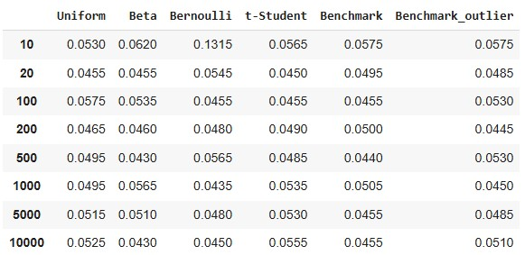
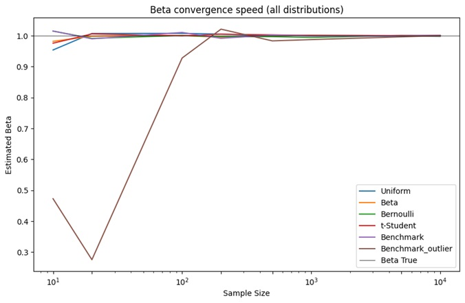
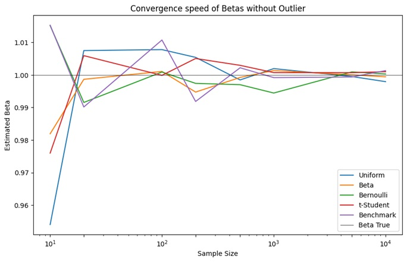
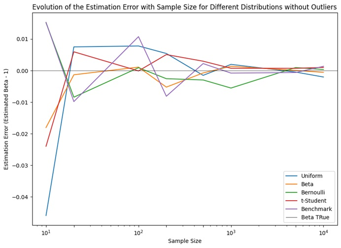

Overview
We will analyse asymptotic inference when we do not assume normality of the errors. Considering the model y=α+βx+μ, where x is a scalar, α=3, β=1 and x ~ N(2,1) we will analyse how statistical inference changes if we do not assume error normality. For comparison we will use the following benchmark: μ ~ N(0,12).
First, we will generate 2000 samples of 10 observations each and, for each sample, we will estimate by classical least squares the parameters of the model and test the null hypothesis that β=1 versus the alternative hypothesis that β≠1. For hypothesis testing we will use a t-test and a significance level of 5%. Finally, we will report the test size, which is nothing more than the proportion of the 2000 samples in which the null hypothesis is rejected.
Then, this process will be replicated by generating 2000 samples of 20, 100, 200, 500, 1000, 5000 and 10000 observations each.
To estimate the models, we will consider that the error follows each of the following distributions:
In all cases, the variance of the error is equal to 12, which is verified as follows:
by definition, but the variance increases due to the appearance of the outlier.
Python Code and Analysis
In this section, we will present and analyze all Python code implementations along with their corresponding outputs.
import numpy as np
import pandas as pd
import matplotlib.pyplot as plt
from scipy.stats import bernoulli, chi2
from scipy.stats import t as t_distribution
from scipy.optimize import minimize
# Seed
np.random.seed(4678)
# Parameters
alpha = 3
beta_true = 1
sigma_true = 12 # Variance of errors in the benchmark
# Sample_size
sample_size = [10, 20, 100, 200, 500, 1000, 5000, 10000]
# Distributions
distributions = ["Uniforme", "Beta", "Bernoulli", "t-Student", "Benchmark", "Benchmark_outlier"]
# Function to generate samples according to specified distribution
def sample_generator(n, distribution):
if distribution == "Uniforme":
u = np.random.uniform(low=-6, high=6, size=n) # Generates samples of Uniform distribution
elif distribution == "Beta":
beta_sample = np.random.beta(2, 5, size=n) # Generates samples of Beta distribution
u = 12 * (beta_sample - 2/7)
elif distribution == "Bernoulli":
u = (bernoulli.rvs(0.8, size=n) - 0.8) * np.sqrt(75) # Generates samples of Bernoulli distribution
elif distribution == "t-Student":
u = np.random.standard_t(2.1818, size=n) # Generates samples of t-Student distribution
elif distribution == "Benchmark":
u = np.random.normal(0, np.sqrt(12), size=n) # Generates samples of Normal distribution
elif distribution == "Benchmark_outlier":
u = np.random.normal(0, np.sqrt(12), size=n) # Generates samples of Normal distribution
u[0] = 500 # We add an outlier in the first observation
else:
raise ValueError("Distribución no reconocida") # Treatment of errors in expressions
# We generate samples from a normal distribution with mean 2 and variance 1.
x = np.random.normal(2, 1, size=n)
# We generate values of y using a linear model
y = alpha + beta_true * x + u
return x, y
# Function to estimate the model
def fit_model(x, y):
X = np.column_stack((np.ones_like(x), x)) # Create X Matrix
res = minimize(lambda beta: np.sum((y - np.dot(X, beta))**2), x0=[0, 0], method='L-BFGS-B') # CLS Estimation
beta_hat = res.x # We obtain the estimated coefficients
y_pred = np.dot(X, beta_hat) # Model predictions
residuals = y - y_pred # Model residuals
s_squared = np.sum(residuals**2) / (len(x) - 2) # Variance estimation
var_beta = s_squared * np.linalg.inv(np.dot(X.T, X))[1, 1] # Coefficients variance
return beta_hat[1], var_beta
# Function to perform t-test
def test_t(x, y):
beta_hat, var_beta = fit_model(x, y)
beta_0 = 1 # Null value for the t-test
t_statistic = (beta_hat - beta_0) / np.sqrt(var_beta) # Statistic t
p_value = 2 * (1 - t_distribution.cdf(np.abs(t_statistic), df=len(x) - 2)) # P value
significance = p_value < 0.05 # Significance
return p_value, significance
# Simulations
results = {}
coefficients_results = {}
estimation_errors = {distribution: [] for distribution in distributions}
# We go through each of the distributions
for distribution in distributions:
results[distribution] = []
coefficients_results[distribution] = []
# We go through each of the sample sizes
for n in sample_size:
rejected = 0
estimated_coefficients = []
errors = []
# For each of the 2000 samples of sample size n
for _ in range(2000):
x, y = sample_generator(n, distribution)
_, significative = test_t(x, y)
rejected += significative
estimated_coef = fit_model(x, y)
estimated_beta = estimated_coef[0]
estimation_error = estimated_beta - beta_true
estimated_coefficients.append(estimated_coef)
errors.append(estimation_error)
test_size = rejected / 2000
results[distribution].append(test_size)
coefficients_results[distribution].append(np.mean(estimated_coefficients, axis=0))
estimation_errors[distribution].append(np.mean(errors))
A total of 2000 samples were generated for each sample size . The explanatory variable was randomly sampled from a Normal distribution with a mean of 2 and a variance of 1, as specified in the problem statement. Similarly, random values for the error term were generated based on each of the previously mentioned distributions.
After generating the values for and , the models were fitted using the Classical Least Squares method. Subsequently, a t-test was conducted at a 5% significance level to evaluate the following hypotheses:
For each value of , the number of times the null hypothesis was rejected across the 2000 samples was calculated and then divided by 2000. This process yields the empirical test size, which represents the probability of committing a Type I error—i.e., incorrectly rejecting a true null hypothesis. Consequently, it is anticipated that the empirical test size will converge to the nominal significance level of 0.05 as increases.
Table 1: Test Size
Table 1 presents the test sizes obtained for different values of using the various proposed error distributions. It can be observed that most of the test sizes fluctuate around the significance level of 0.05 and are generally close to the value obtained for the Normal distribution (Benchmark).
The only case that shows a larger difference is the test size obtained for the model estimated with 10 observations when the error follows a Bernoulli(0.8) distribution. In this case, the rejection rate is approximately 13%. However, as increases, the test size obtained when using a Bernoulli distribution approaches that obtained for the Normal distribution used as the benchmark.
Next, we will analyze the convergence speed of the estimated betas using the different error distributions and compare them with the benchmark.
Figure 1: Beta Convergence Speed

# Beta convergence speed (all distributions)
plt.figure(figsize=(10, 6))
for distribution in distributions:
plt.plot(sample_size, [result[0] for result in coefficients_results[distribution]], label=distribution)
plt.xscale('log')
plt.xticks(sample_size)
plt.axhline(y=1, color='black', label='Beta True', linewidth=0.5)
plt.xlabel('Sample Size')
plt.ylabel('Estimated Beta')
plt.title('Beta convergence speed (all distributions)')
plt.legend()
plt.show()
# Convergence speed of Betas without Outlier
plt.figure(figsize=(10, 6))
for distribution in distributions[:-1]:
plt.plot(sample_size, [result[0] for result in coefficients_results[distribution]], label=distribution)
plt.xscale('log')
plt.axhline(y=1, color='black', label='Beta True', linewidth=0.5)
plt.xticks(sample_size)
plt.xlabel('Sample Size')
plt.ylabel('Estimated Beta')
plt.title('Convergence speed of Betas without Outlier')
plt.legend()
plt.show()
Figure 1 presents a comparison of the convergence speed of the betas using the different distributions. It illustrates the evolution of the estimated betas as the sample size increases.
Due to the presence of an outlier in the first observation when the error follows a normal + outlier distribution, the analysis of the other distributions becomes challenging. However, an important insight we can draw from this graph is that, despite the Benchmark_outlier distribution having an outlier, the estimated Beta for this case deviates significantly from the true Beta value in estimations based on small samples. Nevertheless, starting from , it begins to approach the true Beta value.
As mentioned, due to the presence of the outlier in the distribution we refer to as "Benchmark_outlier," it becomes very difficult to visually distinguish which of the betas converges faster. However, we can observe that the convergence of this distribution with the outlier is not the fastest, allowing us to exclude it from the graph for the purpose of analyzing the other distributions.
In Figure 2, we observe the same convergence graph of the Betas for all distributions, except for the normal distribution with an outlier.
Figure 2: Beta Convergence Speed Without Outlier
In this case, we can see in greater detail that the estimated Betas, when the error follows the Beta distribution, appear to converge the fastest, as they approach the true value of Beta, which is 1, when the sample size is 20. Although it can be observed that in estimations performed with , the value deviates slightly from the true value, it generally remains very close to the true Beta value across different sample sizes of .
Another relevant observation is that the Benchmark, whose distribution is normal with a mean of 0 and variance of 12, exhibits oscillations and is one of the distributions whose estimation takes the longest to converge to the true Beta value.
To reinforce this analysis, the evolution of the estimation errors has been calculated, which are computed as Estimated Beta – 1 and are presented in Figure 3. Similar to the previous case, if we include the estimation errors for the case where the error follows a normal distribution with an outlier, the differences between the other distributions are not visually discernible. Therefore, Figure 3 only presents the graph for the distributions analyzed in Figure 2, that is, without the benchmark with an outlier.
Figure 3: Evolution of the Estimation Error

# Estimation errors for each distribution
plt.figure(figsize=(10, 7))
for distribution in distributions:
plt.plot(sample_size, estimation_errors[distribution], label=distribution)
plt.xscale('log')
plt.xlabel('Sample Size')
plt.xticks(sample_size)
plt.axhline(y=0, color='black', label='Beta True', linewidth=0.5)
plt.ylabel(f'Estimation Error (Estimated Beta - {beta_true})')
plt.title('Evolution of the Estimation Error with Sample Size for Different Distributions')
plt.legend()
plt.show()
# Estimation errors for each distribution without Benchmark_Outlier
plt.figure(figsize=(10, 7))
for distribution in distributions[:-1]:
plt.plot(sample_size, estimation_errors[distribution], label=distribution)
plt.xscale('log')
plt.xlabel('Sample Size')
plt.xticks(sample_size)
plt.axhline(y=0, color='black', label='Beta TRue', linewidth=0.5)
plt.ylabel(f'Estimation Error (Estimated Beta - {beta_true})')
plt.title('Evolution of the Estimation Error with Sample Size for Different Distributions without Outliers')
plt.legend()
plt.show()
We can observe that the estimation errors are consistent with what was seen in Figure 2. In the case of the Beta distribution, it exhibits the estimation error that tends to zero the fastest as the sample size increases, which aligns with our previous analysis where we noted that the Beta distribution converges the fastest to the true parameter value.
On the other hand, it is evident that in the case where the error follows a normal distribution (Benchmark), the estimation error is very high initially, showing oscillations until a sample size of approximately , at which point it approaches zero. This also makes sense, as in Figure 2, we can observe that the case with a normal distribution exhibits significant oscillations for sample sizes between 10 and 500 observations, after which it approaches the true Beta value.
Conclusions
In this study, we have investigated the asymptotic inference in a linear regression model where the assumption of error normality is not imposed. We tested the null hypothesis against the alternative hypothesis using a t-test with a significance level of 5%. To this end, we generated 2000 samples of varying sizes (10, 20, 100, 200, 500, 1000, 5000, and 10000 observations) and fitted linear regression models to each sample using the Classical Least Squares method.
Our analysis revealed that the majority of the test sizes fluctuated around the nominal significance level of 0.05, without a clear trend, and were generally close to the value obtained for the Normal distribution (Benchmark). The only notable exception was the test size obtained with samples of 10 observations when the error followed a Bernoulli(0.8) distribution, where the rejection rate was approximately 13%. However, as the sample size increased, the test size for the Bernoulli distribution progressively approached that of the Normal distribution used as the benchmark.
Furthermore, we examined the convergence speed of the estimated coefficients across different error distributions. The results indicate that, in general, the estimated coefficients converged to the true value more rapidly when the error followed a Beta distribution, particularly for small sample sizes (around 20 observations).
Conversely, we observed that the t-Student and Uniform distributions exhibited higher estimation errors for small samples (10 and 20 observations), suggesting a slower convergence of the estimated coefficients compared to the Beta distribution. This slower convergence may be attributed to the presence of heavy tails, a characteristic common to both the t-Student and Uniform distributions, which have heavier tails than the Normal distribution. The heavier tails imply a higher probability of extreme values, which can adversely impact the estimation of model parameters, especially in smaller samples.